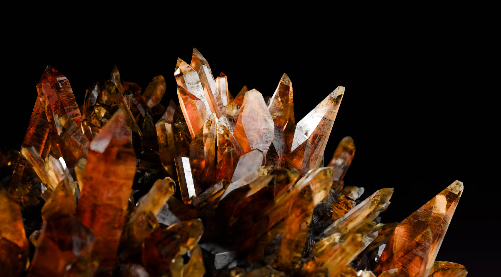
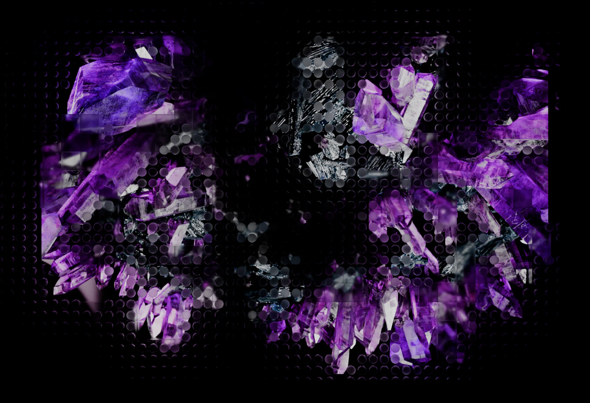

为酒店大堂与商业空间开发矿物与晶体主题的常设影像内容。主屏、立柱屏和侧屏采用不同画幅，内容以模块化结构统一材质、运动和节奏，支持长时间循环播放及后续版本更新。A permanent moving-image system based on minerals and crystal formations, developed for hospitality and commercial interiors. Horizontal, vertical and side displays use different formats, while a modular content structure keeps material, motion and pacing coherent across long-running loops and future updates.
现场图先呈现主屏、立柱屏与侧屏的空间关系，再进入矿物材质和动画细节。Installed views establish the relationship between the main, column and side displays before moving into material and animation detail.


同一内容体系在黑底晶簇、彩色矿物、流动与数据化破碎状态之间切换。The content system moves between dark crystal clusters, colour studies, flowing material states and data-like fragmentation.







同一视觉系统，适配不同画幅。One visual system across multiple formats.
内容先在横向主屏中确立材质、运动和镜头节奏，再针对立柱屏与侧屏重新构图。模块化资产和分屏输出结构让画面在不同方向保持连续，也便于后续替换章节、调整时长和更新版本。Material, motion and camera pacing were established on the main horizontal canvas, then recomposed for column and side displays. Modular assets and a structured multi-output workflow preserve continuity across viewing directions while allowing individual chapters, durations and versions to be updated.
- 项目Project
- 中国国家地理·矿晶空间影像National Geographic — Crystal Landscape
- 应用场景Context
- 酒店大堂与商业空间常设影像Permanent media content for hospitality and commercial interiors
- VIRTURA 职责VIRTURA Role
- 矿晶三维内容研发、多画幅编排、非标准屏幕适配、分屏输出与版本管理3D crystal-content development, multi-format direction, custom-screen adaptation, multi-output delivery and version management